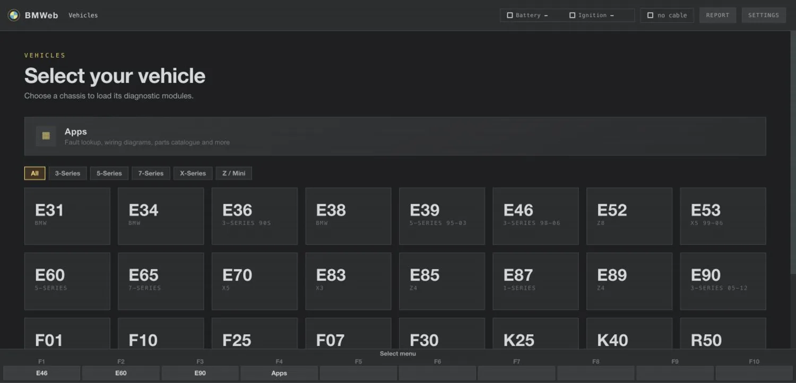

See what the dealer's computer sees, in a browser.
Plug a $20 cable into your 1996 to 2006 BMW, open BMWeb in Chrome, and read fault codes in plain English, live engine data and component tests. Free, nothing to install.
Open BMWeb
E36, E39, E46, E53, E85 and more

What you need
-
A K+DCAN cable, about $20 The common USB diagnostic cable for these BMWs, sold everywhere online.
-
A 1996 to 2006 BMW 3, 5 and 7 Series, X3, X5, Z4 and more. The cable plugs into the round port under the hood or the OBD port by your knee.
-
Chrome or Edge on a computer That's it. No Windows, no INPA install, no virtual machine.
How it goes
- Plug in the cable. One end in the car, the other in your computer. Turn the ignition on.
- Open BMWeb and pick your car. Choose your model, and allow the cable when the browser asks.
- Read your car. Scan every module for faults, watch live data, or test components. The same screens BMW technicians used.
Common questions
- Is it safe to poke around?
- Reading is completely safe, you're only listening. Anything that changes the car asks you first.
- Does it cost anything?
- No. BMWeb is free and open source. Your only cost is the cable.
- Will it work on my phone?
- For everything that does not touch the car. Download the offline zip and open it in Microsoft Edge (iPhone and Android are both supported) for fault lookup, wiring diagrams, documents and parts. Talking to the car needs the K+DCAN cable and a desktop browser with Web Serial, which phones do not have.
- Do I need internet at the car?
- Only the first time. Once BMWeb has loaded, it works offline, and there are offline downloads too.